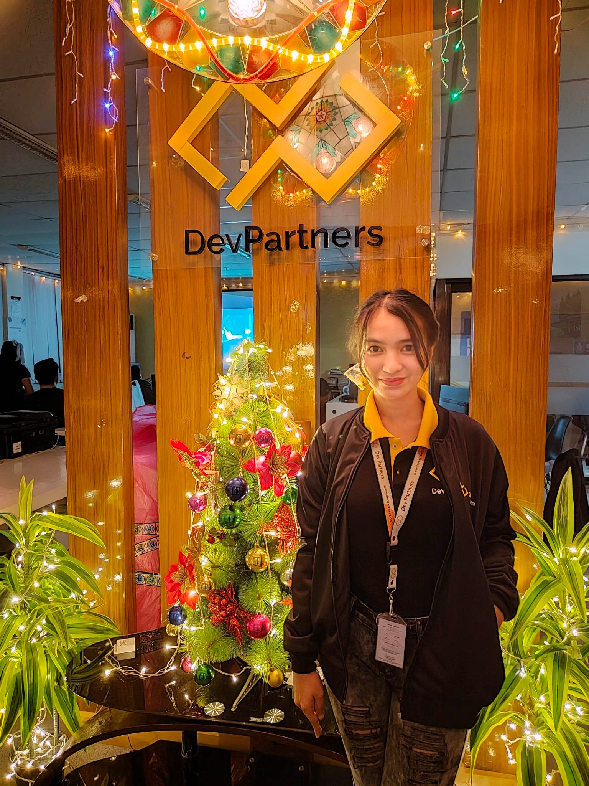

AUBREY ROSE PESCADERO
Strong information technology professional with over 3 years of experience working as an IT and with a Bachelor's degree focused in Computer Engineering from the University of Mindanao. Currently connected in IT Recruitment Industry as a Client Relations Officer and IT Officer.
Experienced Information Technology Support with a demonstrated history of working in BPO and the consumer goods industry. Skilled in Structured Cabling, Computer Networks, Installation and Configuration of Computer Systems and Server Administration, Hardware and Software Maintenance, and Troubleshooting.